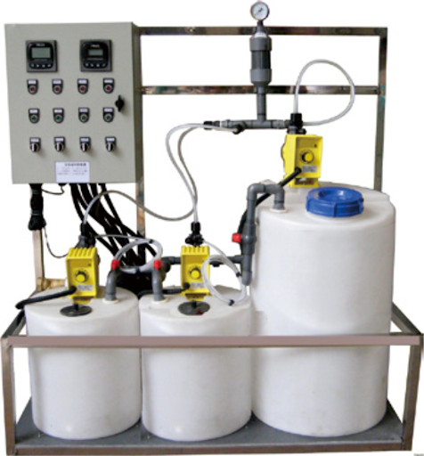

Dosing Systems (Electronic & Non-Electronic) are essential for accurately dispensing chemicals into water treatment processes. These systems ensure precise chemical dosing for water treatment, industrial processes, and other applications. The electronic models offer automated dosing control, while non-electronic systems provide manual dosing solutions.
Overview
Dosing systems are designed for accurate and controlled chemical injection into water treatment and industrial processes. The systems are available in both electronic and non-electronic variants, catering to different application needs. Electronic systems provide automation and precision, while non-electronic systems are cost-effective and ideal for simpler dosing requirements.
Features
- Electronic Models: Automated dosing with precision control, adjustable flow rates, and timers.
- Non-Electronic Models: Manual control for basic chemical dosing with easy-to-operate features.
- Durable materials designed to withstand harsh chemicals and environments.
- Flow-based dosing ensures accurate and consistent chemical addition.
- Compact design for easy installation in existing systems.
- Low maintenance and high reliability for long-term use.
Process
The dosing system operates in the following steps:
- Chemical Preparation: The required chemical is prepared in a storage tank for dosing.
- Dosing Mechanism: In electronic systems, the flow rate and dosing time are controlled automatically. Non-electronic systems require manual setting for the desired flow rate.
- Injection: The prepared chemical is injected into the water stream at the correct rate.
- Monitoring: The system is monitored to ensure consistent dosing and efficient chemical treatment.

Applications
- Water Treatment Plants: For precise chemical dosing to treat municipal and industrial water supplies.
- Cooling Towers: Used to control the chemical levels in cooling systems.
- Wastewater Treatment: Helps in dosing chemicals for coagulation, flocculation, and disinfection processes.
- Industrial Processes: Applied in various industries like food, beverage, and pharmaceuticals to regulate chemical additives.
- Agriculture: Used for fertilization and pesticide application systems.